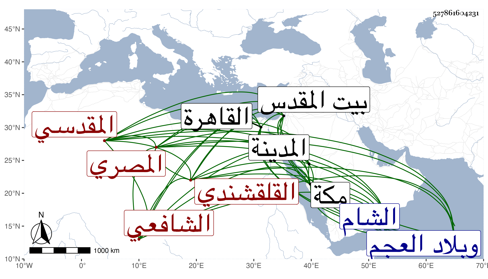

0902Sakhawi.DawLamic.ITO20230111-ara1.EIS1600.527861604231
Biography ID: 527861604231
334
محمد بن إسماعيل بن علي بن السحن بن علي بن إسماعيل بن علي بن صالح بن سعيد الشمس أبو عبد الله بن التقي أبي الفدا القلقشندي المصري الأصل المقدسي الشافعي سبط الحافظ الصلاح العلائي وأخو إبراهيم ووالد عبد الرحمن والتقي أبي بكر . ولد سنة ست وأربعين وسبعمائة فيما كتبه بخطه بيت المقدس وتخرج في الفقه وغيره بأبيه وبالعلائي وكان يحبه كثيرا ويثني عليه وعلى فهمه ويدعو له ويفرح به ويقول عنه وعن أخيه هما ريحانتاي من الدينا ، وقرأ الأصول على العلم إسماعيل الشريحي الحنفي والضياء بن سعد الله القزويني ولازمه ورحل إلى القاهرة فلقى بها البهاء السبكي وغيره من علمائها وبحث معهم والي الشام فلقى بها أخاه التاج فأقبل عليه جدا ولازمه بحيث كان ينام معه على وسادة وأذن كل منهما له في الإفتاء والتدريس بل أصلح ثانيهما في كتابه جمع الجوامع أماكن باستدراكه ، وسمع منهما ومن جده والميدومي والزيتاوي والبياني والحراوي والتونسي والاذرعي وآخرين كالبدر محمد بن عبد الله بن سليمان بن خطيب بيت الآبار سمع عليه جزء الانصاري ، ودرس في سنة ثمان وستين وأفتى بعد ذلك بيسير كل ذلك في حياة أيبه وانتفع به الاماثل لقوة ملكته في الإيصال إلى الطالب ، وكان أماما في المذهب مطلعا على النصوص عارفا بدقائقه قائما بالانتصار للشيخين مستحضرا للروضة وأصلها كثير المطالعة فيهما ، مع التجهد والصيام والتلاوة والقيام مع الأيتام والأرامل وأرباب البيوت والشفاعة المقبولة وتأييد أهل السنة وقمع المبتدعين ومحبة الفقراء والصالحين وزيارتهم ، ومحاسنه جمة . مات في بكرة يوم الجمعة ثاني عشر رجب سنة تسع ودفن بماملا بجانب والده وكانت جنازته مشهودة وصلى عليه بمكة والمدينة وبلاد العجم وأنشد قبل موته بثمانية أيام قول أبي نواس :
| أقمنا بها يوما ويوما وثالثا | ويوما له يوم الترحل خامس |
فكان كذلك لم تمض ثمانية أيام حتى مات وعد من كراماته رحمه الله وإيانا وذكره شيخنا في إنبائه وأرخ مولده سنة خمس وخمسين وأما العيني فقال أنه في سنة خمس وأربعين ، والصواب ما قدمته سيما وقد نقل في المعجم أنه كان في شعبان سنة تسع وأربعين في الرابعة وأنه مات وله أربع وستون وتبعه المقريزي في عقوده وكذا وصف شيخنا في الأنباء والمعجم العلائي بكونه خاله والصواب أنه جده ، وقال في الأنباء أنه مهر وبهر وساد حتى صار شيخ بيت المقدسي في الفقه عليه مدار الفتيا . وقال في المعجم : انتهت إليه رياسة الفقه ببلده وأنه قرأ عليه المسلسل وجزء البطاقة بسماعه لهما على الميدومي وطول حفيده كريم الدين عبد الكريم الماضي ترجمته بما أثبته في بعض المجاميع رحمه الله وإيانا .
